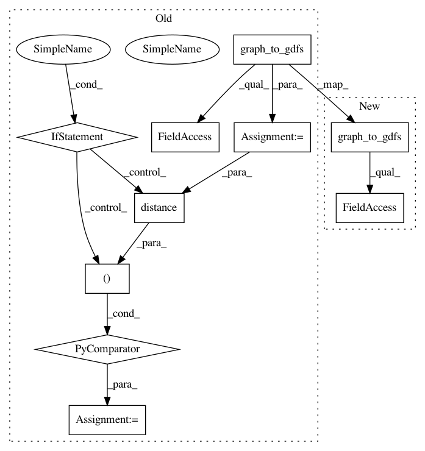

b43ab325ce3e9b4f6b39af7a0f4b8338578bb89a,osmnx/distance.py,,get_nearest_edge,#Any#Any#Any#Any#,314
Before Change
xy_point = Point(reversed(point))
// calculate euclidean distance from each edge"s geometry to this point
gs_edges = utils_graph.graph_to_gdfs(G, nodes=False)["geometry"]
uvk_geoms = zip(gs_edges.index, gs_edges.values)
distances = ((uvk, geom, xy_point.distance(geom)) for uvk, geom in uvk_geoms)
// the nearest edge minimizes the distance to the point
(u, v, key), geom, dist = min(distances, key=lambda x: x[2])
utils.log(f"Found nearest edge ({u, v, key}) to point {point}")
After Change
ne, dist = nearest_edges(G, X=[point[1]], Y=[point[0]], return_dist=True)
u, v, key = ne[0]
geom = utils_graph.graph_to_gdfs(G, nodes=False).loc[(u, v, key), "geometry"]
if return_dist and return_geom:
return u, v, key, geom, dist[0]
elif return_dist:
In pattern: SUPERPATTERN
Frequency: 3
Non-data size: 10
Instances
Project Name: gboeing/osmnx
Commit Name: b43ab325ce3e9b4f6b39af7a0f4b8338578bb89a
Time: 2021-03-16
Author: boeing@usc.edu
File Name: osmnx/distance.py
Class Name:
Method Name: get_nearest_edge
Project Name: gboeing/osmnx
Commit Name: c46a77985576103fc92ac95395f4d8410f56f029
Time: 2020-12-02
Author: boeing@usc.edu
File Name: osmnx/distance.py
Class Name:
Method Name: get_nearest_edge
Project Name: gboeing/osmnx
Commit Name: fe8f96e9981376e26984bfa4812916d14856dc05
Time: 2020-11-18
Author: boeing@usc.edu
File Name: osmnx/distance.py
Class Name:
Method Name: get_nearest_edge